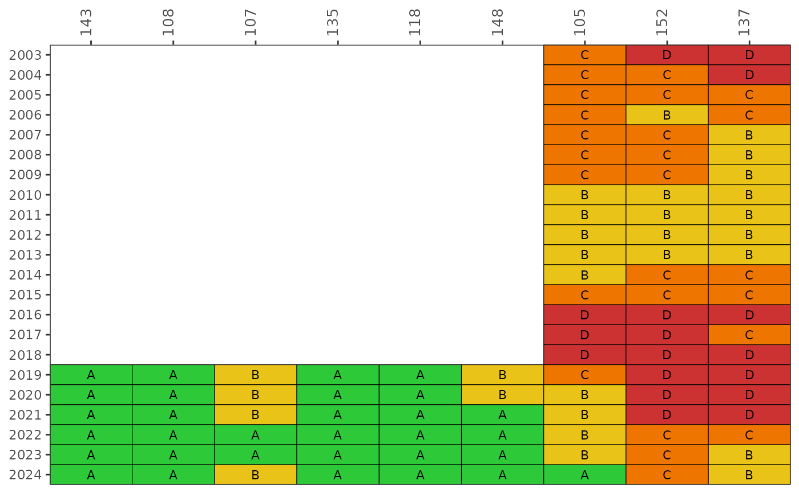
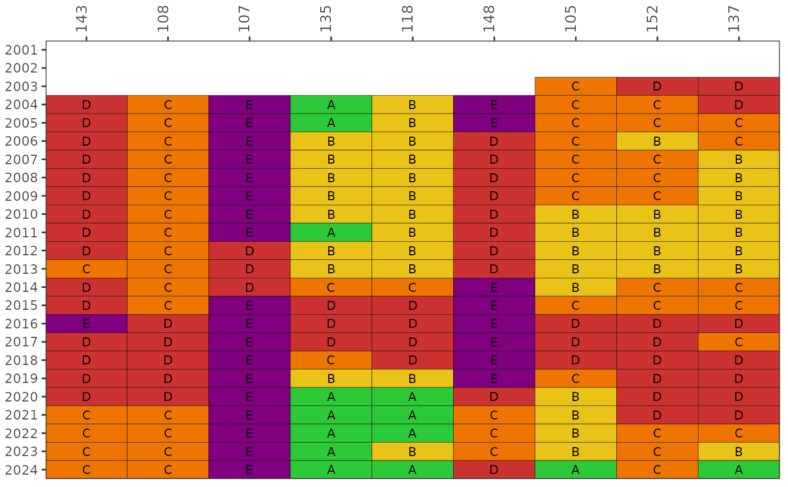
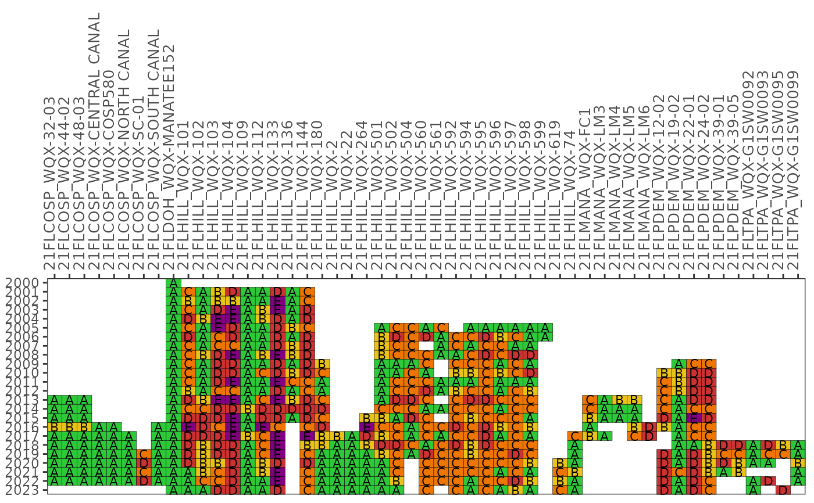

Plot a matrix of Fecal Indicator Bacteria categories over time by station or bay segment
Source:R/show_fibmatrix.R
show_fibmatrix.RdPlot a matrix of Fecal Indicator Bacteria categories over time by station or bay segment
Usage
show_fibmatrix(
fibdata,
yrrng = NULL,
stas = NULL,
bay_segment = NULL,
indic = NULL,
threshold = NULL,
lagyr = 3,
subset_wetdry = c("all", "wet", "dry"),
precipdata = NULL,
temporal_window = NULL,
wet_threshold = NULL,
txtsz = 3,
asreact = FALSE,
nrows = 10,
family = NA,
angle = 90,
size = 10,
hjust = 0,
plotly = FALSE,
width = NULL,
height = NULL,
warn = TRUE
)Arguments
- fibdata
input data frame as returned by
read_importfib,read_importentero, orread_importwqp, see details- yrrng
numeric vector indicating min, max years to include, defaults to range of years in data, see details
- stas
optional vector of stations to include, see details
- bay_segment
optional vector of bay segment names to include, supercedes
stasif provided, see details- indic
character for choice of fecal indicator. Allowable options are
fcoliffor fecal coliform, orenterofor Enterococcus. A numeric column in the data frame must have this name.- threshold
optional numeric for threshold against which to calculate exceedances for the indicator bacteria of choice. If not provided, defaults to 400 for
fcolifand 130 forentero.- lagyr
numeric for year lag to calculate categories, see details
- subset_wetdry
character, subset data frame to only wet or dry samples as defined by
wet_thresholdandtemporal_window? Defaults to"all", which will not subset. If"wet"or"dry"is specified,anlz_fibwetdryis called using the further specified parameters, and the data frame is subsetted accordingly.- precipdata
input data frame as returned by
read_importrain. columns should be: station, date (yyyy-mm-dd), rain (in inches). The objectcatchpreciphas this data from 1995-2023 for select Enterococcus stations. IfNULL, defaults tocatchprecip.- temporal_window
numeric; required if
subset_wetdryis not"all". number of days precipitation should be summed over (1 = day of sample only; 2 = day of sample + day before; etc.)- wet_threshold
numeric; required if
subset_wetdryis not"all". inches accumulated through the defined temporal window, above which a sample should be defined as being from a 'wet' time period- txtsz
numeric for size of text in the plot, applies only if
tab = FALSE. Usetxtsz = NULLto suppress.- asreact
logical indicating if a
reactableobject is returned- nrows
if
asreact = TRUE, a numeric specifying number of rows in the table- family
optional chr string indicating font family for text labels
- angle
numeric for angle of x-axis text labels
- size
numeric for size of the x-axis text labels
- hjust
numeric for horizontal justification of x-axis text labels
- plotly
logical if matrix is created using plotly
- width
numeric for width of the plot in pixels, only applies of
plotly = TRUE- height
numeric for height of the plot in pixels, only applies of
plotly = TRUE- warn
logical to print warnings about stations with insufficient data, default
TRUE
Value
A static ggplot object is returned by default. A reactable table is returned if asreact = TRUE. An interactive plotly object is returned if plotly = TRUE.
Details
The matrix color codes years and stations based on the likelihood of fecal indicator bacteria concentrations exceeding 400 CFU / 100 mL for Fecal Coliform or 130 CFU / 100 mL for Enterococcus. Bay segments are used instead of stations if bay_segment is not NULL and the input data are from read_importentero. The likelihoods are categorized as A, B, C, D, or E (Microbial Water Quality Assessment or MWQA categories) with corresponding colors, where the breakpoints for each category are <10%, 10-30%, 30-50%, 50-75%, and >75% (right-closed). By default, the results for each year are based on a right-centered window that uses the previous two years and the current year to calculate probabilities from the monthly samples (lagyr = 3). Methods and rationale for this categorization scheme are provided by the Florida Department of Environmental Protection, Figure 8 in the document at http://publicfiles.dep.state.fl.us/DEAR/BMAP/Tampa/MST%20Report/Fecal%20BMAP%20DST%20Final%20Report%20--%20June%202008.pdf and Morrison et al. 2009 in the BASIS 5 proceedings.
The default stations for fecal coliform data are those used in TBEP report #05-13 (https://drive.google.com/file/d/1MZnK3cMzV7LRg6dTbCKX8AOZU0GNurJJ/view) for the Hillsborough River Basin Management Action Plan (BMAP) subbasins if bay_segment is NULL and the input data are from read_importfib. These include Blackwater Creek (WBID 1482, EPC stations 143, 108), Baker Creek (WBID 1522C, EPC station 107), Lake Thonotosassa (WBID 1522B, EPC stations 135, 118), Flint Creek (WBID 1522A, EPC station 148), and the Lower Hillsborough River (WBID 1443E, EPC stations 105, 152, 137). Other stations can be plotted using the stas argument.
Examples
show_fibmatrix(fibdata)

# change the threshold
show_fibmatrix(fibdata, threshold = 200)
# change the indicator
show_fibmatrix(fibdata, indic = 'entero')

# show matrix for only dry samples
show_fibmatrix(enterodata, indic = 'entero', lagyr = 1, subset_wetdry = "dry",
temporal_window = 2, wet_threshold = 0.5)
#> Warning: Stations with insufficient data for lagyr: 21FLPDEM_WQX-05-06
